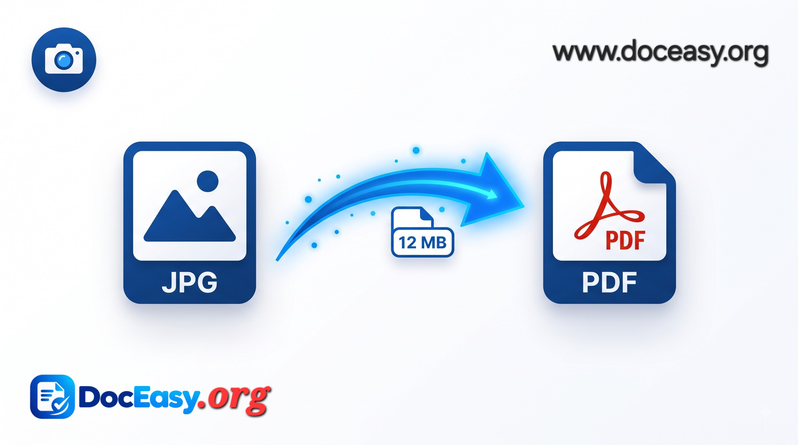

Convert JPG Images to PDF
Transform multiple JPG or PNG images into a single professional PDF document — 100% in your browser.
Select or Drop JPG / PNG Images
Add single or multiple files to compile into a single PDF
Complete Guide: Merge & Convert Multiple JPG/PNG Images into PDF Online
Converting physical paperwork, smartphone camera snapshots, fee receipts, and certificate photos into a clean, unified PDF is essential when submitting documents to universities, government employment boards, and visa embassies. While traditional converters send personal files to external servers or enforce strict file-size paywalls, the OfficeKit JPG to PDF Converter builds standard PDF documents directly in your browser using pure WebAssembly binary encoding.

📷 [Place Demo Here: assets/images/jpg-to-pdf-demo.jpg]Step-by-Step Instructions:
- Step 1 - Select or Drag Photos: Click the upload zone to choose one or more JPG, PNG, or WebP pictures.
- Step 2 - Verify Your File Queue: Inspect the loaded files list. Remove any unwanted pages using the red cross icon.
- Step 3 - Click Convert: Hit the "Convert to PDF Now" action button to trigger instant client-side binary page embedding.
- Step 4 - Instant Download: Download the generated PDF directly to your device storage.
Why Choose OfficeKit JPG to PDF?
- Zero Cloud Storage: Your sensitive photos are compiled in your device RAM and never uploaded to any remote host.
- Lossless Dimension Retention: Each page dynamically adjusts to match the original image dimensions.
- Fast Client-Side Execution: Powered by PDF-Lib, conversions happen in milliseconds.
FAQ
Q: Is there any limit on how many images I can convert?
No. You can compile dozens of pages in a single queue, bounded only by your device's browser memory.
Q: Can I combine both PNG and JPG pictures into the same PDF?
Yes. The embedded converter recognizes both formats automatically.
Q: Are my documents private?
Absolutely. No file content is saved, logged, or sent over the internet.